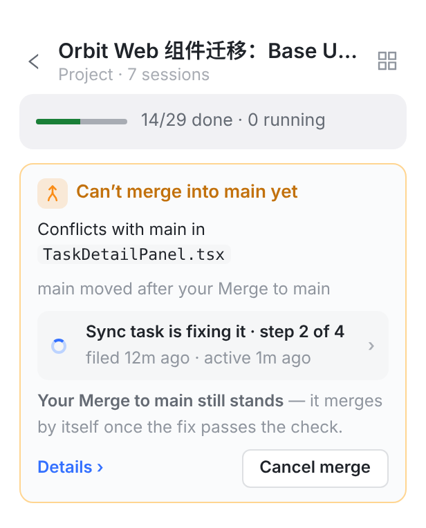

合入冲突不是凭空来的，总有人先按了一下：接受一份交付（任务落到项目分支），或者按了 Merge to main（项目分支合进 main）。
所以冲突应该接着那一下往下走：出现在那次合入原来的位置，修好后由 Orbit 把原来那一下做完，最后以“已合入”收尾。不应该另起一张待办卡，等别人再按一次 Retry。下面是两种合入各自的流程，以及每个时刻出现在哪里。

蓝底是这次要改的地方。原则跟合入一样：卡片只画在项目会话页，别处只负责把你带到这张卡，或者打开同一个 Details。
| 落地中 | 协调者在看 | 修复中 | 需要你 | 再次落地 | 已落地 | |
|---|---|---|---|---|---|---|
| 项目会话页 | 进度卡一行 Landing · checking（现有） | 琥珀卡：原因 ＋ Coordinator is looking at it ＋ 何时转给你 | 琥珀卡：修复进度行 ＋ Lands again by itself… Nothing for you to do. | 橙卡：一句请求 ＋ Send back… / Ask coordinator | 进度卡一行 ＋ 2nd try · the conflict was fixed in round 2 | 卡收起；时间线一行 P3.2 landed |
| 协调会话 | 协调者自己的话（照旧） | 一行琥珀：P3.2 couldn’t land — conflict in … · Details（取代 Exception item 大卡） | 一行灰：Coordinator sent P3.2 back to fix it · round 2 started · Open | 一行橙：Merge conflict on P3.2 is waiting for you · Review（取代 Now yours 大卡）；顶部提示条计数 | 一行蓝：Landing P3.2 again · checking · Watch | 一行绿：P3.2 landed · after 1 conflict · Receipt；21:34 那行变灰：conflict fixed in round 2 |
| 会话列表 · 项目行 | Landing · checking（现有） | Landing stopped · conflict（琥珀字） | Landing stopped · being fixed | Needs you · Merge conflict（橙点和计数，现有） | Landing · checking | 照旧 |
| 推送 / 横幅 | 不推 | 不推 | 不推 | P3.2 can’t land — needs you，点开项目会话页 | 不推 | 不推 |
| 任务页 Landing 段 | Landing onto project/…（现有） | Stopped at a conflict · coordinator 3m | Being fixed in round 2 · 3 of 5 | 同一句请求 ＋ 同两个按钮 | Landing again · 2nd try | Landed · after 1 conflict |
| 交付的那一轮会话 | 底部标签 Landing · checking › | Landing stopped · conflict › | Being fixed in round 2 › | Waiting on the owner › | Landing again › | On project/34ZZ… ✓ |